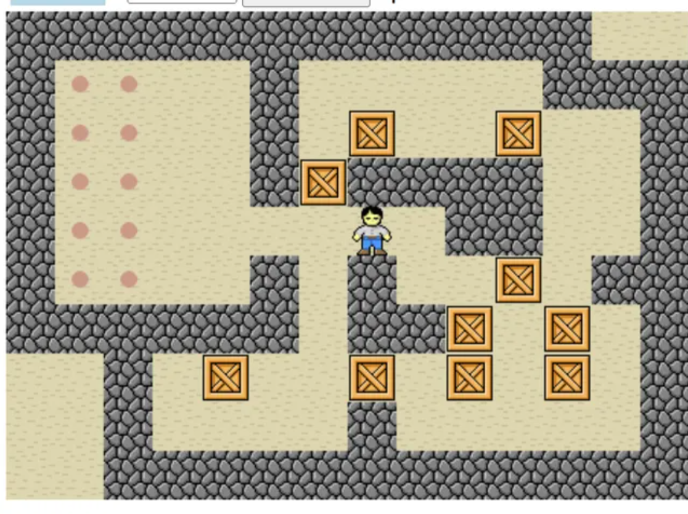
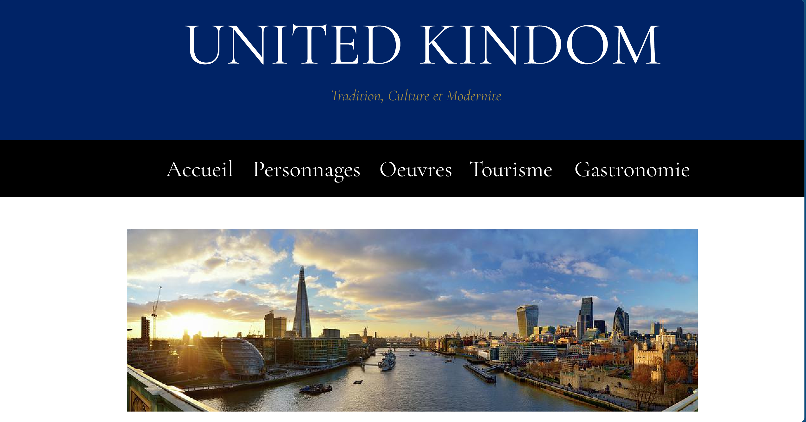
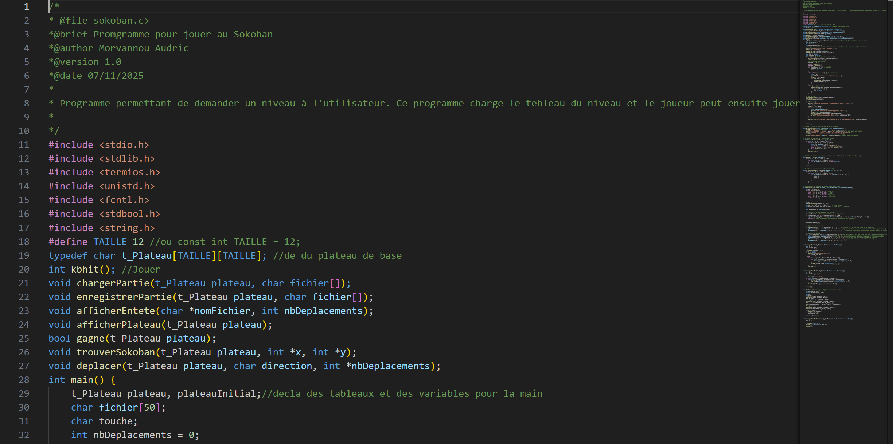
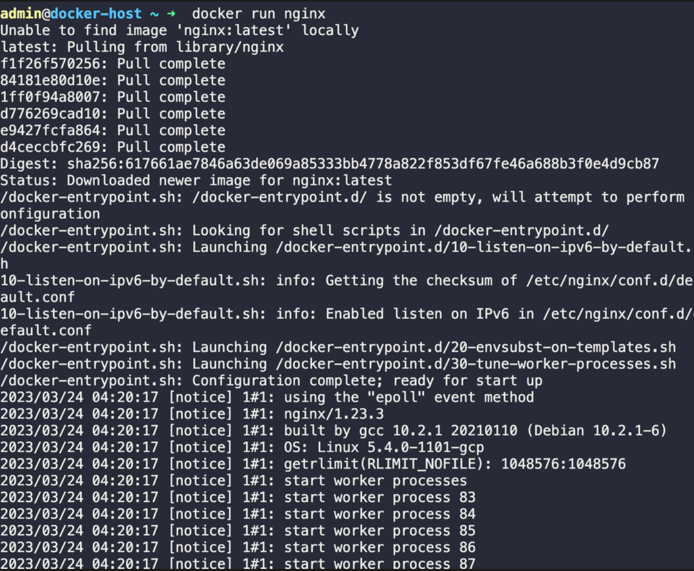
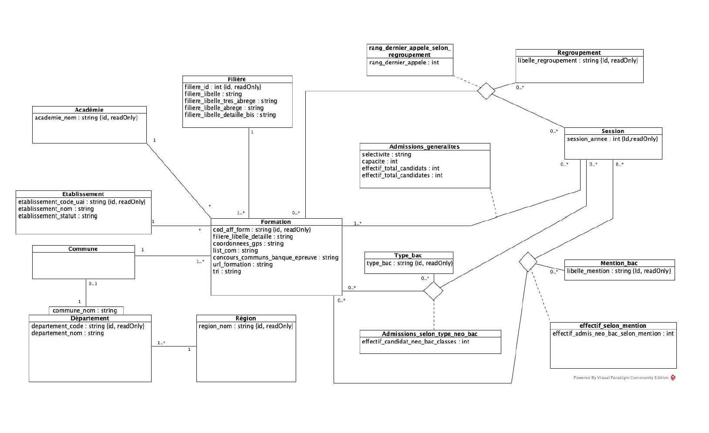

Étudiant en BUT Informatique | Athlète en quête de performance
Étudiant en première année de BUT Informatique à l'IUT de Lannion, je suis un athlète engagé vers le haut niveau sur la piste. Dans le code comme dans le sport, l'analyse minutieuse de la performance, la gestion de l'effort et la détermination face aux obstacles sont mes moteurs quotidiens pour mener à bien mes projets informatiques.
Démonstration et justification des compétences acquises à travers mes projets du semestre 1.
Mes traces : SAÉ 1.01 (Jeu du Sokoban en C) et Projet Web (Conception du site sur le Royaume-Uni en HTML/CSS).
Preuves de réussite : Implémentation complète de fonctionnalités avancées pour le Sokoban (gestion dynamique des niveaux de zoom, mémorisation des états et module d'annulation). Conception de pages web structurées respectant la sémantique HTML5.
Dans la SAÉ 1.01, j'ai programmé en C la possibilité de zoomer avec la touche '+', de dézoomer avec '-', et d'annuler des déplacements avec la touche 'u'. J'ai mémorisé la suite des centaines de déplacements en utilisant des caractères spécifiques (g, h, b, d pour le personnage seul, et G, H, B, D s'il pousse une caisse) stockés dans un tableau 1D de type t_tabDeplacement. En fin de partie, j'ai implémenté l'enregistrement de ces mouvements dans un fichier .dep. J'ai également conçu le site web sur le Royaume-Uni, en y intégrant un menu déroulant, des galeries, et des informations détaillées structurées en HTML et CSS.


Mes traces : SAÉ 1.02 (Sokoban autonome et comparaison algorithmique).
Preuves de réussite : Écriture d'un programme automatisé capable de lire et exécuter des fichiers (.dep) sur des plateaux (.sok). Optimisation de l'affichage via l'intégration de temporisations d'exécution.
Pour l'analyse algorithmique (SAÉ 1.02), j'ai écrit un programme qui "déroule" automatiquement une partie de Sokoban à partir des fichiers fichier.sok et fichier.dep. J'ai mis en place la procédure de lecture de fichiers chargerDeplacements pour transférer les éléments vers mon tableau. Pour permettre un suivi visuel confortable à l'écran, j'ai programmé une pause d'un quart de seconde après chaque mouvement grâce à la fonction usleep(250000). Le code se chargeait ensuite de valider si la suite de déplacements constituait bien une solution ou non pour cette partie et d'afficher le nombre de mouvements.

Mes traces : SAÉ 1.03 (Installation d'un poste de développement automatisé).
Preuves de réussite : Déploiement d'images Docker dédiées. Automatisation de chaînes de conversion de formats pour une ESN, via ssconvert, ImageMagick et WeasyPrint.
Dans la SAÉ 1.03, j'ai été chargé d'automatiser des tâches répétitives de nettoyage et d'adaptation de données (textes, images, tableaux Excel) reçues de sources variées pour alimenter un site Web d'une ESN. Pour y parvenir, j'ai récupéré et utilisé des images Docker (avec la commande docker image pull) contenant des outils performants. J'ai ainsi scripté la conversion de tableaux Excel .xlsx en format CSV grâce à l'image sae103-excel2csv et sa commande ssconvert. J'ai géré le poids et les dimensions d'images au format WebP à l'aide de l'image sae103-imagick utilisant la commande convert, et utilisé weasyprint avec sae103-html2pdf pour la conversion de documents finaux.

Mes traces : SAÉ 1.04 (Conception d'une BDD pour un comparateur d'électricité).
Preuves de réussite : Modélisation des plages horaires et tarifs dynamiques (Heures creuses virtuelles, Linky). Production du dictionnaire de données et d'un diagramme de classes UML complet.
Pour cette SAÉ, l'objectif était de structurer une base de données pour une application comparant les offres tarifaires des fournisseurs d'électricité. Il a fallu modéliser avec précision des concepts comme les plages techniques définies par Enedis, les heures creuses virtuelles fixées dynamiquement sur le marché (indépendamment d'Enedis), ou encore les relevés précis fournis par le compteur Linky par pas d'une demi-heure. J'ai ainsi rédigé le dictionnaire de données, établi l'ensemble des dépendances fonctionnelles, et réalisé un diagramme de classes UML strict en définissant les règles de gestion complémentaires.

Mes traces : Gestion du double-projet (Sport de haut niveau et BUT), planification des livrables SAÉ.
Preuves de réussite : La discipline imposée par mes entraînements sur piste se reflète dans ma gestion du temps académique. Respect systématique des jalons stricts sur Moodle et rédaction méthodique de fichiers de suivi de projet.
Savoir planifier à long terme m'a aidé à anticiper les phases de rush de la première année. J'ai respecté scrupuleusement le délai imparti et le format des documents pour mes dépôts sur Moodle. Dans la SAÉ 1.03 par exemple, j'ai géré la rédaction d'un fichier PARTICIPATION.md pour documenter les noms des tâches réalisées, le temps total alloué et le pourcentage d'implication de chaque membre de l'équipe, assurant ainsi un pilotage transparent.
Mes traces : Projets collaboratifs (Site Web du Royaume-Uni en trinôme, travaux SAÉ 1.03).
Preuves de réussite : L'esprit "club" développé en athlétisme m'a permis de structurer efficacement la communication d'équipe. Synchronisation agile des tâches et processus de relecture croisée avant validation finale.
La plupart des projets du S1, comme la SAÉ 1.03 sur l'installation du poste de développement, nécessitaient de constituer des équipes (3 ou 4 étudiants). L'important n'était pas seulement de se répartir le code, mais d'assurer la cohérence du livrable. Nous devions impérativement relire et valider l'ensemble du contenu en équipe avant qu'un seul membre identifié comme "responsable du dépôt" ne transmette le travail sur Moodle. J'ai également mis cette synchronisation à profit lors du projet de création du site web sur le Royaume-Uni réalisé en trinôme avec Timothée et Raphaël.
Vous souhaitez échanger sur mon profil hybride tech/sport, mes projets ou mon parcours ? Vous pouvez me joindre directement :